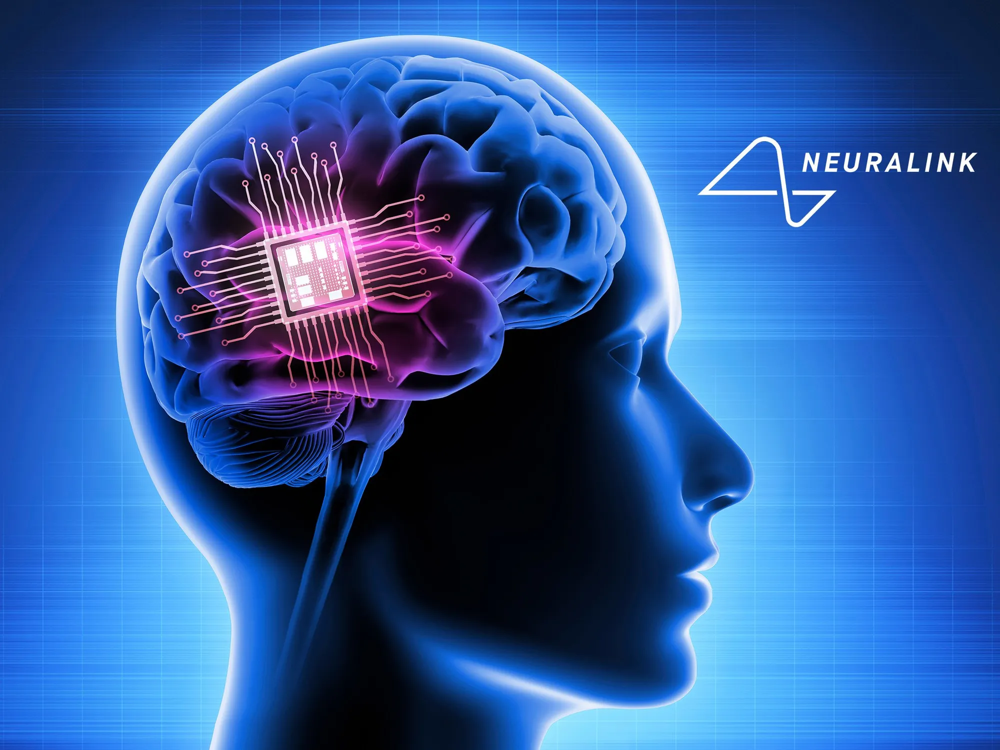

Introduction
The relationship between humans and machines is evolving faster than ever before. 
What once involved simple keyboards, buttons, and screens is gradually transforming into a much more natural, intelligent, and immersive experience. As technology continues to develop, the boundaries between humans and machines are becoming less noticeable, creating new possibilities for communication, work, healthcare, education, and everyday life.
The future of human-machine interaction will not simply be about making devices faster or more powerful, but about making them more responsive to human needs, emotions, movements, and thoughts. Several emerging technologies are contributing to this transformation, including affective interfaces, artificial intelligence and brain-computer interfaces, assistive interfaces, human-robot interfaces, neural interfaces, spatial interfaces, transport interfaces, and wearable interfaces. Together, these developments could fundamentally change the way people interact with the world around them.

Here is the synthetic list of the topics covered in this section:
Neural Interfaces
Neural interfaces represent another fascinating direction for human-machine interaction. Although they are closely related to brain-computer interfaces, neural interfaces refer more broadly to technologies that connect with the nervous system and interact with neural signals. These systems may be designed to record, interpret, or stimulate electrical activity within the brain, spinal cord, or peripheral nerves.
In medicine, neural interfaces already show potential for helping people with neurological injuries, movement disorders, and sensory impairments. For example, neural stimulation technologies can help restore certain functions, while advanced prosthetics may use signals from the nervous system to provide more natural control of artificial limbs.
In the future, these technologies could potentially allow people to regain lost sensory experiences or communicate with electronic devices through increasingly direct neural connections. They may also contribute to a better understanding of how the human nervous system works. However, because neural interfaces interact with such sensitive biological systems, their development requires extensive medical research, careful testing, and strict ethical regulations.
Assistive interfaces
Closely connected to these developments are assistive interfaces, which aim to make technology more accessible to people with different physical, sensory, or cognitive abilities. The purpose of these interfaces is to reduce barriers and allow individuals to interact with digital and physical environments more independently. Examples include screen readers for people with visual impairments, speech recognition software for individuals who cannot easily use a keyboard, eye-tracking systems, adaptive keyboards, and smart prosthetic devices.
Future assistive interfaces could become increasingly personalised through AI, adapting automatically to the abilities and preferences of each individual. For example, a person with limited mobility might use eye movements or small gestures to control household appliances, communicate, or navigate a computer. Similarly, intelligent hearing systems could filter background noise and enhance important sounds depending on the user's surroundings.
These developments could significantly improve independence, inclusion, and quality of life. However, accessibility should not be treated as an additional feature that is introduced after a product is designed. Instead, it should be considered from the beginning of the development process so that future technologies can be used by as many people as possible.
AI and Brain-Computer Interfaces
Another major area of development involves artificial intelligence (AI) and brain-computer interfaces (BCIs). Artificial intelligence is already changing how humans communicate with technology through voice assistants, chatbots, recommendation systems, and intelligent software. In the future, AI is expected to become even more integrated into everyday interactions, allowing machines to understand natural language, anticipate user needs, and provide personalised assistance.
Brain-computer interfaces could take this interaction further by creating a direct communication pathway between the human brain and an external device. Instead of relying entirely on physical movements, users could potentially control computers, robotic devices, or other technologies through detected brain activity. When combined with AI, these systems could become more accurate and adaptable by learning to recognise individual patterns of brain signals.
This could have major applications in medicine, communication, and accessibility, particularly for people who have lost the ability to speak or move. Nevertheless, the development of these technologies also introduces concerns regarding mental privacy, data security, and the possibility of unauthorised access to sensitive neural information.
Affective Interfaces
Another important development is the emergence of affective interfaces, which are designed to recognise and respond to human emotions. Traditional machines generally respond to direct commands, without understanding the emotional state of the person using them. Affective interfaces aim to change this by using technologies such as facial recognition, voice analysis, eye tracking, and physiological sensors to identify emotions such as happiness, frustration, stress, or sadness.
For example, a virtual assistant could recognise when a user sounds frustrated and adjust its responses to become more helpful, patient, or supportive. In education, these systems could identify when students are losing concentration or struggling to understand a subject, allowing learning platforms to adapt accordingly. In healthcare, they could help monitor emotional well-being and provide useful information to professionals.
However, recognising emotions also raises important questions about privacy, consent, and the accuracy of emotional interpretation. Since emotions are complex and differ between individuals and cultures, these technologies must be developed carefully to avoid incorrect assumptions about people's feelings.
Human-Robot Interfaces
Another field that is expected to play a significant role in the future is the development of human-robot interfaces. As robots become more common in workplaces, hospitals, homes, and public spaces, humans will need increasingly effective ways to communicate and collaborate with them. Human-robot interfaces are designed to make these interactions safer, more understandable, and more intuitive.
Instead of programming robots through complicated instructions, people may increasingly communicate with them through speech, gestures, facial expressions, and physical demonstrations. For example, robots in hospitals could assist medical staff by transporting equipment, helping patients move, or performing repetitive tasks. In industrial environments, collaborative robots could work alongside employees, adapting their movements to avoid accidents and responding to human instructions in real time.
Domestic robots could also become more capable of understanding household routines and assisting with everyday activities. The main challenge will be ensuring that robots behave predictably and that people can understand their intentions. Trust, safety, and clear communication will therefore be essential for successful human-robot collaboration.
Spatial Interfaces
At the same time, spatial interfaces are changing how people interact with digital information and their physical surroundings. Unlike traditional interfaces that limit digital content to flat screens, spatial interfaces allow users to interact with virtual objects in three-dimensional environments. Technologies such as augmented reality (AR), virtual reality (VR), and mixed reality (MR) make it possible to combine digital elements with the real world or create entirely virtual spaces.
For example, architects could use augmented reality to visualise buildings before they are constructed, while medical students could practise procedures using realistic virtual simulations. In education, students might explore historical environments or interact with three-dimensional scientific models instead of relying exclusively on textbooks.
Spatial interfaces could also transform remote collaboration by allowing people in different locations to meet in shared virtual environments and interact with digital objects as if they were physically present. As these technologies become more advanced, interaction may increasingly depend on natural gestures, eye movements, and voice commands rather than traditional controllers. However, issues such as device costs, motion sickness, and the separation between virtual and physical experiences will need to be addressed.
Wearable Interfaces
Wearable interfaces are likely to become one of the most visible forms of future human-machine interaction because they integrate technology directly into everyday life. Smartwatches, fitness trackers, smart glasses, and other wearable devices already allow people to access information, monitor their health, and communicate without constantly using a smartphone.
Future wearable technologies could become smaller, more comfortable, and more powerful, making them almost invisible in daily activities. Smart glasses might display navigation instructions, translate conversations in real time, or provide useful information about objects in the surrounding environment. Advanced health-monitoring devices could continuously measure indicators such as heart rate, body temperature, and blood oxygen levels, potentially identifying unusual patterns and alerting users to possible health concerns.
Clothing containing electronic sensors could also monitor posture, movement, and physical performance. By combining wearables with AI and other interfaces, technology could become more proactive, providing assistance when it is needed rather than waiting for users to request it. Nevertheless, the widespread use of wearable devices raises concerns about personal data collection, constant monitoring, and the potential loss of privacy.
Transport Interfaces
The future of human-machine interaction will also have a major impact on transport interfaces. As vehicles become increasingly connected, automated, and intelligent, the way passengers and drivers interact with transportation systems will change significantly. Modern vehicles already include touchscreen displays, voice assistants, navigation systems, and driver-monitoring technologies.
Future interfaces could provide more personalised and context-aware experiences, adjusting information and controls according to the user's preferences, attention, and surroundings. In autonomous vehicles, for instance, passengers may no longer need to concentrate on driving and could instead interact with the vehicle through conversational AI, gestures, or personalised digital environments.
Public transportation could also benefit from intelligent interfaces that provide real-time updates, accessible navigation, and seamless connections between different transport services. Furthermore, advanced interfaces could help improve road safety by monitoring driver fatigue, detecting potential distractions, and providing warnings when necessary. However, as transportation becomes more dependent on digital systems, cybersecurity, reliability, and the ability for humans to intervene in emergencies will remain essential considerations.
Gesture-Based Interfaces
The future of human-machine interaction will also have a significant impact on gesture-based interfaces. As technology becomes increasingly advanced and intelligent, the way people interact with digital devices will continue to evolve. Gesture-based interfaces allow users to control computers, smartphones, smart home devices, and other technologies through physical movements, without necessarily using a keyboard, mouse, or touchscreen.
Future gesture-based systems could provide more natural and intuitive interactions by recognising hand movements, body gestures, and facial expressions. For instance, users may be able to navigate applications, control virtual objects, or operate electronic devices simply by moving their hands or making specific gestures. In virtual and augmented reality environments, gesture recognition could make interactions more immersive, allowing users to manipulate digital objects as if they were physically present.
Furthermore, gesture-based interfaces could improve accessibility by offering alternative ways for people with physical disabilities to interact with technology. They could also make everyday activities more convenient, particularly in situations where touching a device is difficult or impractical. However, challenges such as gesture recognition accuracy, privacy, accidental activation, and the need for reliable sensors will remain important considerations.
Conclusion
Ultimately, the future of human-machine interaction will be shaped by the convergence of all these technologies rather than by any single innovation. Neural interfaces could create more direct connections between humans and machines, assistive interfaces could make technology more inclusive, AI and brain-computer interfaces could enable more intelligent communication, and affective interfaces could allow machines to respond to human emotions. At the same time, human-robot, spatial, wearable, and transport interfaces could integrate technology more naturally into everyday environments.
These developments offer enormous opportunities to improve quality of life, increase productivity, expand accessibility, and transform the way society functions. However, technological progress must be accompanied by responsible design, ethical considerations, strong privacy protections, and appropriate regulations.
Machines should ultimately be developed to support human abilities rather than replace human judgement, creativity, and connection. The most successful future of human-machine interaction will therefore not necessarily be the one in which technology becomes the most advanced, but the one in which it becomes the most useful, accessible, safe, and naturally integrated into human life.